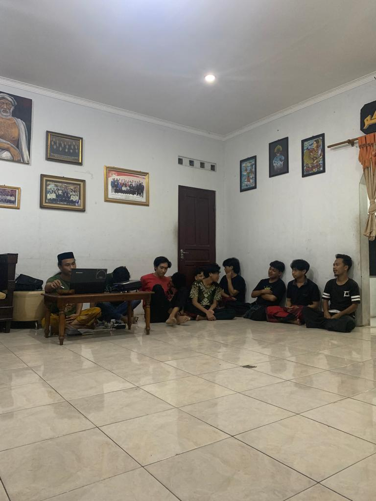

ASPURA
Asrama Putra Lasinrang Merupakan Rumah Bagi Mahasiswa yang sedang menempuh pedidikan Mulai dari Sekolah Dasar sampai Perguruan Tinggi Yang ada di YOGYAKARTA. dan juga merupakan sebuah aset pemerintah daerah kabupaten pinrang sulawesi selatan. Adapun gambar di atas merupakan pahlawan dari kota pinrang
WARGA ASPURA
Penghuni asrama PUTRA LASINRANG semua berasal dari kab.pinrang apabila bukan keturuan dari daerah tersebut, maka tidak bisa untuk tinggal di asrama. karena itulas yang tertulis, AD-ART. Adapun Asrama ini kami diwadahi Organisasi Keluarga daerah yaitu IKATAN PELAJAR MAHASISWA PINRANG. dimana ORDA ini aktif bersosial di Masyarakat Setempat di jogja, dan khususnya di KAB.PINRANG.